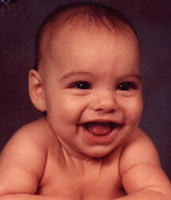
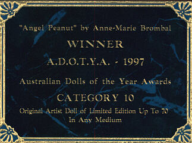

"Peanut"The "Real" Peanut On the left is the photo that inspired me to sculpt the tiny doll called "Peanut", an 8-inch darling radiating the pure joy of living. You'll notice that, at her insistance, I provided hair for the finished doll. The original (the doll, not the child!) was sculpted in polymer clay and went on to become a resin limited edition of fifty, each of whom had their own "peanut-sized" personality.
Below is a sampling of Peanut's many heartwarming personalities. My own Peanut continues to be an inspiration to me, is now a valuable assistant when I do shows or teach classes and will no doubt be the subject of future sculpting sessions (if I can convince her to sit still long enough!)
"Sunbonnet Peanut"  "Blue Portrait Peanut" "Pink Fairy Peanut" "Angel Peanut" This little sweetheart won a "Best of Section" in the original doll category at the Canberra Doll Show in June of 1997, and went on to win the Australian "Doll of the Year" in the category for resin dolls in 1997.  For everyone who wanted to know what "Peanut" looks like today, sixteen years later, here she is. |